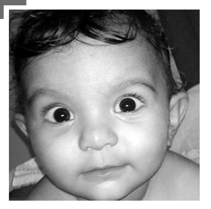

Adding Life to your Desires
- Aakanksha Fertility Center touches lives by its motto to provide high quality and compassionate care with its fine clinical expertise
- Aakanksha Fertility Center believes in providing world class fertility care at an affordable price and makes you realize your dreams and hopes
- When you have difficulty starting a family, it is one of the most emotional challenges in the world
- Our continuous psychological support helps you to overcome each step and gain perspective on why each person's experience is different
- Consistently on the cutting edge of fertility treatments and technology, we are committed to providing superior care to all couples
- Aakanksha Fertility Center is a specialized fertility care clinic located in the heart of Bangalore – nested in Lingarajapuram, Hennur Road
